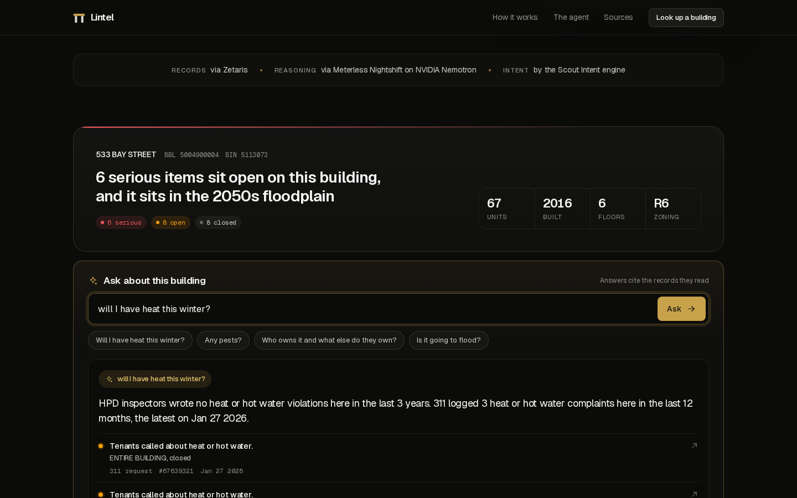

Before you sign.
An agent that answers a renter's question about one New York building from city records, and shows exactly why.
Violations, 311 calls, owners and flood maps are public, spread over a dozen datasets nobody reads before signing a lease.

194 labeled examples, 14 renter intents. 79 of 79 live engine checks on real records.
Type 533 Bay Street, Staten Island. Then ask: will I have heat this winter?